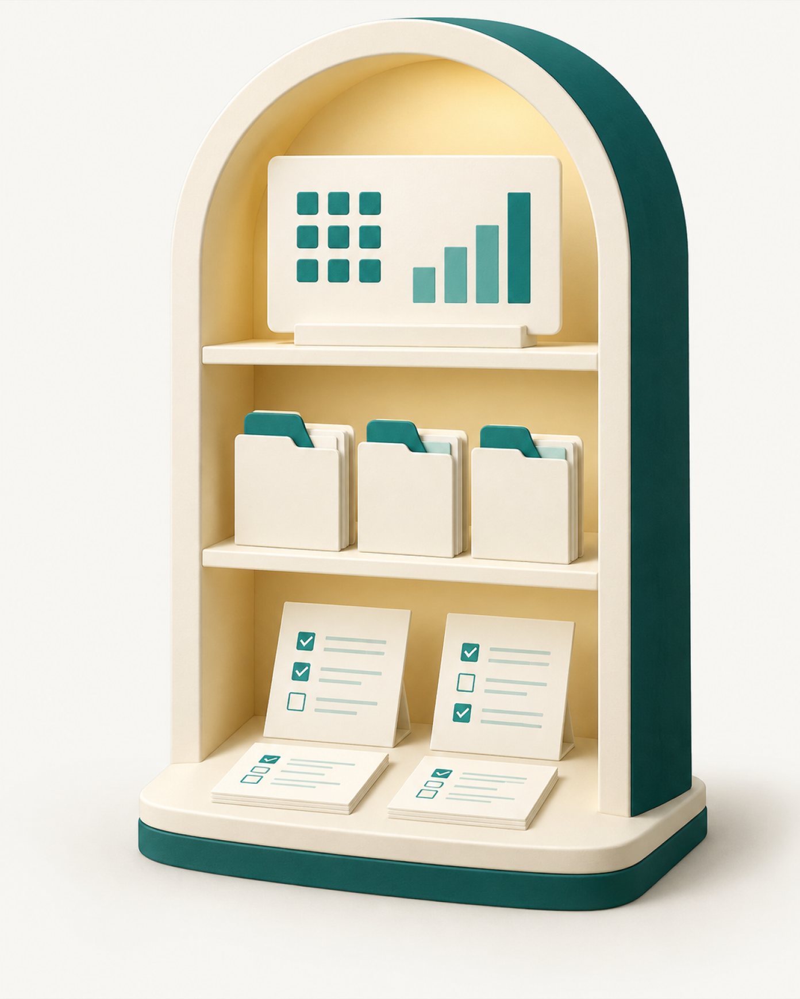

응답으로, 함께 이루다.
작은 응답들이 모여 하나의 자료를 이루고,
그 자료를 바탕으로 함께 업무의 목적을 이룹니다.
이름의 중심에는 ‘응답 + 이룸’이 있습니다.
AI 기반 설문·현장조사 관리 플랫폼
중앙관리자부터 현장조사자까지 함께.
설문 준비부터 현장 응답, 결과 취합까지
하나의 공간에서 업무를 이어갑니다.
응다비:룸의 이야기부터 만나보세요.
응답이 흩어지지 않도록,
다음 업무로 이어지도록.
서비스 소개 · 이름에 담긴 이야기
현장의 작은 응답 하나에는 누군가의 상황과 필요가 담겨 있습니다.
그 목소리가 더 나은 업무로 이어지도록 돕습니다.
응답 + 이룸
그리고, Room.
‘응답이룸’을 소리 나는 대로,
응다비:룸.
작은 응답들이 모여 하나의 자료를 이루고,
그 자료를 바탕으로 함께 업무의 목적을 이룹니다.
이름의 중심에는 ‘응답 + 이룸’이 있습니다.
공간을 뜻하는 Room의 의미를 더했습니다.
여러 현장의 응답이 한곳에 모이고,
담당자들의 업무가 이어지는 공간입니다.
응답을 모으는 데서 한 걸음 더.
더 나은 판단과 실천의 바탕이 되도록.
서비스 소개 · 함께 사용하는 구조
설문과 조사 안내는 현장으로, 모인 응답은 기관별 결과로 이어집니다.

서비스 기능 · 설문 준비
조사 목적과 대상을 정리하면 AI가 초안을 돕습니다.
직접 작성하거나, 초안을 검토·수정해 사용할 수 있어요.
“어르신 안부를 확인하는
짧고 쉬운 설문을 만들어줘.”
설명용 예시 · 실제 AI 호출이 아닙니다.
○ 좋아요 ○ 보통이에요 ○ 좋지 않아요
○ 네 ○ 아직 못 했어요
자유롭게 적어 주세요
문항과 응답 방식을 확인한 뒤 수정해 사용해요.
안부 확인 · 응답 예시
응답을 골라보세요.
체험용 예시입니다.
응답은 저장·제출되지 않습니다.
서비스 기능 · 현장 응답 수집
기관담당자가 현장조사자에게
설문 입력 화면으로 연결되는 인터넷 주소를 보냅니다.
이 주소(링크)를 누르면 응답을 입력할 수 있습니다.
누르면 해당 조사의 입력 화면이 열립니다.
함께 안내받은 비밀번호로 접속합니다.
한 명의 조사를 마친 뒤, 다음 대상자를 이어 조사합니다.
현장조사자가 여러 대상자를 만나,
확인한 응답을 입력합니다.
이용 안내 · 역할별 이용 순서
같은 공간 안에서, 각자의 역할에 맞게 시작합니다.
역할을 선택하거나 아래로 스크롤하면
이용 순서가 하나씩 펼쳐집니다.
설문을 준비하고 전체 취합 현황을 확인하는 순서입니다.
발급받은 계정으로 접속하고 기관 유형을 확인해요.
설문 양식을 작성하고 문항·응답 방식을 검토해요.
사용할 설문과 조사 기준을 확인하고 운영을 준비해요.
전체 취합 현황을 살피고 권한 범위의 자료를 확인해요.
관할 기관담당자의 조사 진행 상황을 확인하는 순서입니다.
발급받은 계정으로 접속하고 관할 기관담당자를 확인해요.
확인하려는 설문과 조회 조건을 선택해요.
관할 기관담당자별 제출·확인 현황을 살펴봐요.
부여된 권한 안에서 필요한 응답과 현황을 확인해요.
현장조사자에게 설문 입력 주소를 안내하고, 제출 응답을 관리합니다.
발급받은 기관담당자 계정으로 로그인해요.
현장에서 사용할 설문과 조사 대상, 접속 정보를 확인해요.
현장조사자에게 설문 화면 주소와 접속 비밀번호를 보내요.
현장조사자가 제출한 응답을 살펴보고 확인 상태를 관리해요.
대상자를 방문하고 그 응답을 입력하는 현장조사자용 안내입니다.
기관담당자에게 설문 입력 화면 주소와 접속 비밀번호를 받아요.
받은 주소를 누르고, 함께 안내받은 비밀번호로 접속해요.
대상자가 답한 내용을 현장조사자가 입력해요.
내용을 확인해 제출하고 완료 안내를 확인해요. 다음 대상자도 이어 조사해요.
이용 안내 · 자주 묻는 질문과 이용 범위
네. 설문을 직접 작성하고, 응답을 수집·관리할 수 있습니다. AI를 활용한 설문 초안 작성 및 통계 분석은 API 키를 연결한 뒤 이용할 수 있습니다.
기관담당자는 현장조사자의 응답을, 광역관리자는 관할 기관담당자의 현황을, 중앙관리자는 전체 현황을 부여된 권한 범위에서 확인합니다.
AI가 만든 내용은 초안입니다. 담당자가 조사 목적에 맞게 문항과 응답 방식을 검토·수정한 뒤 사용해 주세요. AI 요청에는 실제 개인정보를 넣지 마세요.
기관담당자에게 설문 입력 화면 주소와 접속 비밀번호를 받아 시작합니다. 받은 접속 링크를 누르면 해당 조사의 응답 화면이 열립니다.
현장조사자 안내 자세히 보기